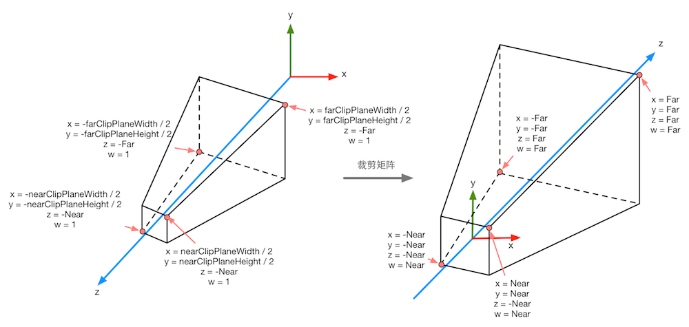
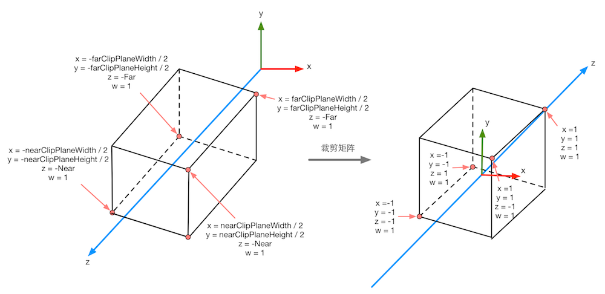
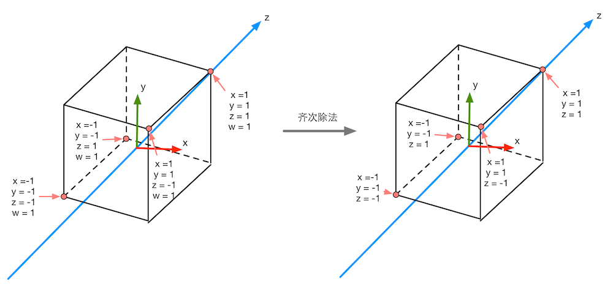
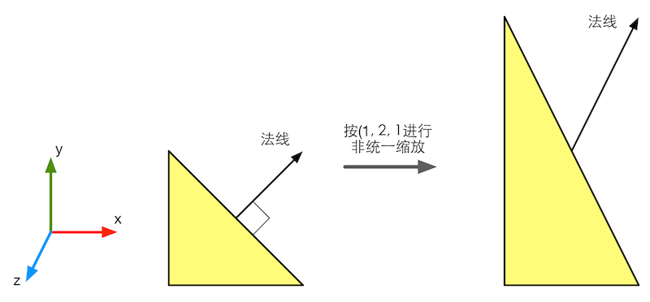
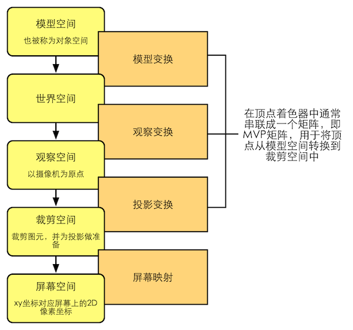
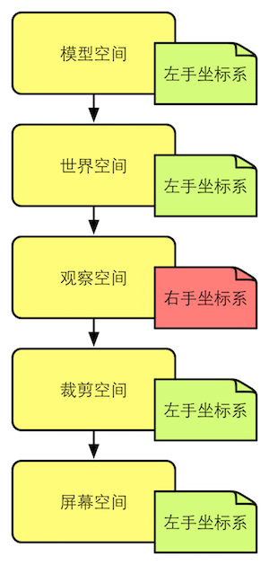

1. 矩阵与矩阵变换
1.1 矩阵
向量的矩阵表示：设已知向量
$$
\vec{R}=a \vec{\imath}+b \cdot \vec{\jmath}+c \cdot \vec{k}
$$
则可用矩阵表示为
$$\vec{R}=\left[\begin{array}{lll} a & b & c \end{array}\right] \cdot\left[\begin{array}{c} \vec{i} \\ \vec{j} \\ \vec{k} \end{array}\right] $$
1.2 齐次坐标表示法
由n+1维向量表示一个n维向量。如n维向量(P1,P2, … ,Pn)表示为(hP1,hP2,…,hPn,h) ，其中h称为哑坐标。其作用为：
- 将各种变换用阶数统一的矩阵来表示。提供了用矩阵运算把二维、三维甚至高维空间上的一个点从一个坐标系变换到另一坐标系的有效方法。
- 便于表示无穷远点：例如：（xxh, yxh, h) ，令h等于0。
- 齐次坐标变换矩阵形式把直线变换成直线段，平面变换成平面，多边形变换成多边形，多面体变换成多面体。（图形拓扑关系保持不变)
- 变换具有统一表示形式的优点：便于变换合成，便于硬件实现。
1.3 行矩阵还是列矩阵
在Unity中，常规做法是把矢量放在矩阵的右侧，即把矢量转换为列矩阵来进行运算。这意味着，在Unity中的矩阵乘法通常都是右乘，例如：
$$
\mathbf{C B A v}=(\mathbf{C}(\mathbf{B}(\mathbf{A v})))
$$
使用列矩阵意味着我们对上式的阅读顺序为从右到左，即先对v使用A进行变换，再使用B进行变换，最后使用C进行变换。
2. 矩阵变换
2.1 二维变换矩阵
由于我们在Unity中基本上使用的都是三维矩阵的变换，所以在这里就不过多讨论二维矩阵的变换，只给出二维变换矩阵的统一表达式：
$$ \begin{bmatrix} a & b & p \\ c & d & q \\ m & n & s \end{bmatrix} $$
2.2 三维变换矩阵
线性变换指哪些可以保留矢量加和标量乘的变换。对于所有线性变换来说，如果我们要对一个三维的矢量进行变换，那么仅仅使用3X3的矩阵就可以表示所有的线性变换。但是3X3矩阵不能表示平移操作，因此将其扩展为4X4矩阵（齐次坐标）。
2.2.1 基本操作
平移矩阵：
$$ \begin{bmatrix} 1 & 0 & 0 & t_{x} \\ 0 & 1 & 0 & t_{y} \\ 0 & 0 & 1 & t_{z} \\ 0 & 0 & 0 & 1 \end{bmatrix} $$
缩放矩阵：
$$ \begin{bmatrix} k_{x} & 0 & 0 & 0 \\ 0 & k_{y} & 0 & 0 \\ 0 & 0 & k_{z} & 0 \\ 0 & 0 & 0 & 1 \end{bmatrix} $$
旋转矩阵：
$$ \mathbf{R}_{x}(\theta)=\left[\begin{array}{cccc} 1 & 0 & 0 & 0 \\ 0 & \cos \theta & -\sin \theta & 0 \\ 0 & \sin \theta & \cos \theta & 0 \\ 0 & 0 & 0 & 1 \end{array}\right] $$
$$ \mathbf{R}_{y}(\theta)=\left[\begin{array}{cccc} \cos \theta & 0 & \sin \theta & 0 \\ 0 & 1 & 0 & 0 \\ -\sin \theta & 0 & \cos \theta & 0 \\ 0 & 0 & 0 & 1 \end{array}\right] $$
$$ \mathbf{R}_{z}(\theta)=\left[\begin{array}{cccc} \cos \theta & -\sin \theta & 0 & 0 \\ \sin \theta & \cos \theta & 0 & 0 \\ 0 & 0 & 1 & 0 \\ 0 & 0 & 0 & 1 \end{array}\right] $$
对矢量的变换则利用该矢量的列矩阵与上述矩阵点乘即可。
$$ \begin{bmatrix} x \\ y \\ z \\ 1 \end{bmatrix} $$
2.2.2 复合变换
复合变换可通过矩阵的串联来实现，可以使用下面的公式来计算：
$$
\mathbf{p_{new}}=\mathbf{M_{tramslation}}\mathbf{M_{rotation}}\mathbf{M_{scale}}\mathbf{p_{old}}
$$
由于我们使用的是列矩阵，因此阅读顺序是从右到左，即先进行缩放变换，再进行旋转变换，最后进行平移变换。
在绝大多数情况下，我们约定变换的顺序是先
缩放，再旋转，最后平移。
还有个要注意的是旋转的变换顺序。如果要同时绕三个轴进行旋转，在Unity中旋转的顺序是zxy，这意味着组合旋转变换矩阵是：
$$ M_{r o t a t a _Z} M_{r o t a t a _X} M_{r o t a t a _Y}=\left[\begin{array}{cccc} \cos \theta _{Z} & -\sin \theta _{Z} & 0 & 0 \\ \sin \theta _{Z} & \cos \theta _{Z} & 0 & 0 \\ 0 & 0 & 1 & 0 \\ 0 & 0 & 0 & 1 \end{array}\right]\left[\begin{array}{cccc} 1 & 0 & 0 & 0 \\ 0 & \cos \theta _{X} & -\sin \theta _{X} & 0 \\ 0 & \sin \theta _{X} & \cos \theta _{X} & 0 \\ 0 & 0 & 0 & 1 \end{array}\right]\left[\begin{array}{cccc} \cos \theta _{Y} & 0 & \sin \theta _{Y} & 0 \\ 0 & 1 & 0 & 0 \\ -\sin \theta _{Y} & 0 & \cos \theta _{Y} & 0 \\ 0 & 0 & 0 & 1 \end{array}\right] $$
由于Unity文档中说明的旋转顺序是在旋转过程中保持坐标轴不变的（不是那种旋转一个轴后由于自身方向的改变再按新的坐标轴的旋转的顺序），所以在这里按zxy顺序旋转和带坐标轴旋转的yxz顺序旋转是一样的。
3. 坐标空间
3.1 坐标空间变换
$$ \mathbf{M}_{c\rightarrow p}=\left[\begin{array}{cccc} | & | & | & | \\ \mathbf x_{c} & \mathbf y_{c} & \mathbf z_{c} & \mathbf O_{c} \\ | & | & | & | \\ 0 & 0 & 0 & 1 \end{array}\right] $$
其中，
$$
\mathbf{M}_{c\rightarrow p}
$$
表示的是从子坐标空间变换到父坐标空间变换的变换矩阵，其逆矩阵这位从父坐标空间变换到子坐标空间变换的变换矩阵。
我们知道，矢量是没有位置的，因此坐标空间的原点变换是可以忽略的。也就是说，我们仅仅平移坐标系的原点是不会对矢量造成任何影响的。那么，对矢量的坐标空间变换就可以使用3X3的矩阵来表示，因为我们不需要表示平移变换。那么变换矩阵就是：
$$ \mathbf{M}_{c\rightarrow p} =\left[\begin{array}{cccc} | & | & | \\ \mathbf x_{c} & \mathbf y_{c} & \mathbf z_{c} \\ | & | & | \end{array}\right] $$
其逆矩阵则为：
$$ \mathbf{M}_{c\rightarrow p} =\left[\begin{array}{cccc} - & \mathbf x_{B} & - \\ - & \mathbf y_{B} & - \\ - & \mathbf z_{B} & - \end{array}\right] $$
在Shader中，我们常常会看到截取变换矩阵的前3行和前3列来对法线方向、光照方向来进行空间变换，这正是原因所在。
例如我们想把一个矢量从坐标空间$ \mathbf A $变换到坐标空间$ \mathbf B $，而且我们已经知道坐标空间$ \mathbf B $的x轴、y轴、z轴在空间$ \mathbf A $下的表示，即$\mathbf x_{B} $、$ \mathbf y_{B} $和$ \mathbf z_{B} $。那么想要得到从$ \mathbf A $到$ \mathbf B $的变换矩阵$ \mathbf{M}_{c\rightarrow p} $，我们可以用$ \mathbf{M}_{c\rightarrow p} $来变换$\mathbf x_{B} $，那么得到的结果应该是(1,0,0)，那么我们按行来摆放就有： $$ \mathbf{M}_{A\rightarrow B} \mathbf x_{B} =\left[\begin{array}{cccc} - & \mathbf x_{B} & - \\ - & \mathbf y_{B} & - \\ - & \mathbf z_{B} & - \end{array}\right] \mathbf x_{B} = \left[\begin{array}{cccc} \mathbf x_{B} \cdot \mathbf x_{B} \\ \mathbf y_{B} \cdot \mathbf y_{B} \\ \mathbf z_{B} \cdot \mathbf z_{B} \end{array}\right] = \left[\begin{array}{cccc} 1 \\ 0 \\ 0 \end{array}\right] $$
3.2 模型空间
下面我们要说说，在渲染流水线中，顶点在各个空间的变换过程。
3.2.1 模型空间
模型空间（model space）也叫对象空间（object space）或局部空间（local space）。每个模型都有自己独立的坐标空间，当它移动或旋转时，模型空间也会跟着移动和旋转。
3.2.2 世界空间
世界空间（world space）相对于模型空间，世界空间是模型所在的最外层的父空间。Unity中，世界空间同样是左手坐标系，原点是游戏空间的中心，x、y、z轴固定不变。
3.2.3 观察空间
观察空间（view space）观察空间也被称为摄像机空间，在观察空间中，摄像机位于原点，它决定了我们渲染游戏所使用的视角，观察空间采用的是右手坐标系，所以+z轴指的是摄像机后方。
为了得到顶点在观察空间的位置，我们可以有两种方法。
一是计算观察空间的三个坐标轴在世界空间的表示，然后算出观察空间到世界空间的变换矩阵，再求逆得住世界空间到观察空间的变换矩阵。
二是平移整个观察空间，让摄像机原点位于世界空间原点，坐标轴与世界空间坐标轴重合。两种方法得到的变换矩阵是一样的。
这里我们用第二种方法，有一点很重要，我们上面说过世界空间的变换顺序公式是先缩放，再旋转，再平移，而这里我们为了把摄像机移回世界坐标原点，我们需要逆向变换，所以是先平移，再旋转，再缩放。
$$
\mathbf{M_{view}}=\mathbf{M_{scale}}\mathbf{M_{rotation}}\mathbf{M_{tramslation}}
$$
因为观察空间是右手坐标系，与世界空间的左手坐标系z轴相反，所以z分量要取反操作：
3.2.4 裁剪空间-透视投影
我们先看看透视投影的6个裁剪平面怎么决定的。在Unity中，它们由Camera组件中的参数和Game视图的纵横比共同决定。如图所示：
上图中Camera的Field of View(FOV)决定视锥体竖直方向的张开角度，Clipping Planes中的Near和Far决定视锥体的近裁剪平面和远裁剪平面距离摄像机的远近，这样就可以求出近和远裁剪平面的高度：
$$ \begin{aligned} &\text {nearClipPlaneHeight}=2 \cdot \text {Near} \cdot \tan \frac{F O V}{2}\\ &\text {farClipPlaneHeight}=2 \cdot \text {Far} \cdot \tan \frac{F O V}{2} \end{aligned} $$
而横向信息由摄像机的纵横比决定。这个纵横比由Game视图的纵横比和Viewport Rect中的W和H属性共同决定（Unity中可以通过Camera.aspect获得）。假设纵横比为Aspect，则：
$$ \begin{aligned} \text {Aspect} &=\frac{\text {nearClipPlaneWidth}}{\text {nearClipPlaneHeight}} \\ \text {Aspect} &=\frac{\text {farClipPlaneWidth}}{\text {farClipPlaneHeight}} \end{aligned} $$
这样可以确定透视投影的投影矩阵：
$$ \mathbf{M}_{\text {frustum}}=\left[\begin{array}{cccc} \frac{\cot \frac{F O V}{2}}{A s p e c t} & 0 & 0 & 0 \\ 0 & \cot \frac{F O V}{2} & 0 & 0 \\ 0 & 0 & -\frac{F a r+N e a r}{F a r-N e a r} & -\frac{2 \cdot N e a r \cdot F a r}{F a r-N e a r} \\ 0 & 0 & -1 & 0 \end{array}\right] $$
这个投影矩阵是建立在Unity坐标系上，观察空间是右手坐标系，使用列矩阵右乘，且变换后z分量在[-w, w]之间。但在DirectX中，z分量在[0, w]之间，上面的透视矩阵就要更改了。
用上一步观察空间得到的坐标和投影矩阵相乘，就可以变换到裁剪空间中：
$$ \mathbf p_{clip}=\mathbf M_{frustum}\mathbf P_{view}=\left[\begin{array}{cccc} \frac{\cot \frac{F O V}{2}}{A s p e c t} & 0 & 0 & 0 \\ 0 & \cot \frac{F O V}{2} & 0 & 0 \\ 0 & 0 & -\frac{F a r+N e a r}{F a r-N e a r} & -\frac{2 \cdot N e a r \cdot F a r}{F a r-N e a r} \\ 0 & 0 & -1 & 0 \end{array}\right]\left[\begin{array}{l} x \\ y \\ z \\ 1 \end{array}\right]=\left[\begin{array}{c} x\frac{\cot \frac{F O V}{2}}{A s p e c t} \\ y \cot \frac{F O V}{2} \\ -z \frac{F a r+N e a r}{F a r-N e a r}-\frac{2 \cdot N e a r \cdot F a r}{F a r-N e a r} \\ -z \end{array}\right] $$
本质就是对x、y、z做了不同的缩放（z还有个平移）。w也不再是1，而是z取反。最后通过x、y、z是否在[-w, w]中判断是否位于视锥体内。不在其内的会被剔除或裁剪，这样通过投影矩阵后，视锥体变化如下：

3.2.5 裁剪空间-正交投影
视锥体是个长方体，因此不需要FOV了，用Size代替了，Size是高度的一半,Aspect是横纵比。因此，我们得到公式：
$$
nearClipPlaneHeight =2 \cdot Size
$$
$$
farClipPlaneHeight = nearclipPlaneHeight
$$
$$
nearclipPlaneWidth = Aspect \cdot nearClipPlaneHeight
$$
$$
farClipPlaneWidth = nearClipPlaneWidth
$$
这样，可以得到正交投影的裁剪矩阵：
$$ \begin{aligned} \mathbf p_{cip}=\mathbf M_{ortho} \mathbf P_{view} &=\left[\begin{array}{ccc} \frac{1}{\text {Aspect} \cdot \text {Size}} & 0 & 0 & 0 \\ 0 & \frac{1}{\text {Size}} & 0 & 0 \\ 0 & 0 & -\frac{2}{\text {Far}-\text {Near}} & -\frac{\text {Far}+\text {Near}}{\text {Far}-\text {Near}} \\ 0 & 0 & 0 & 1 \end{array}\right]\left[\begin{array}{l} x \\ y \\ z \\ 1 \end{array}\right]=\left[\begin{array}{l} \frac{x}{\text {Aspect} \cdot \text {Size}}\\ \frac{y}{\text {Size}} \\ -\frac{2 z}{\text {Far}-\text {Near}}-\frac{\text {Far}+\text {Near}}{\text {Far}-\text {Near}} \\ 1 \end{array}\right] \end{aligned} $$
然后观察空间的顶点与矩阵相乘：
\frac{x}{\text {Aspect} \cdot \text {Size}}
可以看出，w分量依然为1。判断是否位于裁剪空间内与透视投影一样，x、y、z是否在[-w, w]之间。通过投影矩阵后，视锥体变化如下：

可以看出，变换后空间从长方体变成正方体了，范围是[-1, 1]。
3.3 屏幕空间
经过投影矩阵变换后，我们完成了裁剪工作，开始正式投影了，把视锥体投影到屏幕空间。屏幕空间是个二维空间，投影的过程分为两步：
首先，要进行齐次除法，也被称为透视除法。就是用x、y、z分量除以w分量。在OpenGL中，这一步得到的坐标叫归一化的设备坐标（NDC,Normalized Device Coordinates）。经过这一步，我们把坐标从齐次裁剪空间转换到NDC中，这样会使透视投影的类似金字塔形状的空间变成正方体，并且和正交投影的一样：


透视投影坐标经裁剪矩阵变换后w是-z，所以坐标x、y、z都除以-z就得到了右边的样子。而正交投影变换后w是1，所以除以1没变化，这样两种投影方式就都是一样的正方体了。
现在，我们开始屏幕映射了。Unity左下角坐标是（0, 0），右上角是（pixelWidth, pixelHeight），现在经过齐次除法后x、y的范围是[-1, 1]，所以这个过程就是个缩放的过程。
首先把x、y变到[0, 1]，比如x = (x+1) / 2，然后再乘以pixelWidth就是映射后的x了，当然这里的x，y都是裁剪空间的坐标除以w。
齐次除法和屏幕映射的过程可以使用下面的公式来总结：
$$ \begin{array}{l} \text {screen}_{x}=\frac{\operatorname{clip}_{x} \cdot \text {pixelWidth}}{2 \cdot \operatorname{clip}_{w}}+\frac{\text {pixelWidth}}{2} \\ \text {screen}_{y}=\frac{\text {clip}_{y} \cdot \text {pixelHeight}}{2 \cdot \operatorname{clip}_{w}}+\frac{\text {pixelHeight}}{2} \end{array} $$
在上式中，x、y被用作投影了，z分量会被用于深度缓冲，传统方式是z/w直接存进深度缓冲，但这不是必须的，驱动生产商会根据硬件来选择最好的存储格式。
4. 法线变换
在游戏中，模型的顶点携带的信息中，法线就是其中一种。我们变换一个模型，不仅需要变换它的顶点，还需要变换顶点法线，以便在后续处理（如片元着色器）中计算光照等。
但在变换法线的时候，如果使用同一个变换矩阵，可能就无法确保维持法线的垂直性。

因此，在法线的变换过程中，我们使用原变换矩阵的逆转置矩阵来变换法线就可以得到正确的结果。
因为逆矩阵的计算比较麻烦，所以我们可以根据变换类型尽可能的避免逆矩阵的计算过程：
- 变换只包括旋转变换，那么这个变换矩阵就是正交矩阵（正交矩阵的转置矩阵与逆矩阵相同）；
- 变换只包括旋转和统一缩放，则可以利用统一缩放指数k来得到变换矩阵的逆转置矩阵；
- 变换包括了非统一变换，则必须求解逆转置矩阵。
5. 总结
顶点着色器的最基本的任务就是把顶点坐标从模型空间转换到裁剪空间中。而在片元着色器中，我们通常也可以得到该片元在屏幕空间的像素位置。
通常在变换顶点时，我们都是使用右乘的方式来按列矩阵进行乘法。这是因为Unity提供的内置矩阵（如UNITY_MATRIX_MVP(模型观察投影矩阵)等）都是按照列存储的。

在Unity中，坐标系的旋向性也随着变换发生了转变。下图总结了Unity中各个空间使用的坐标系旋向性。
